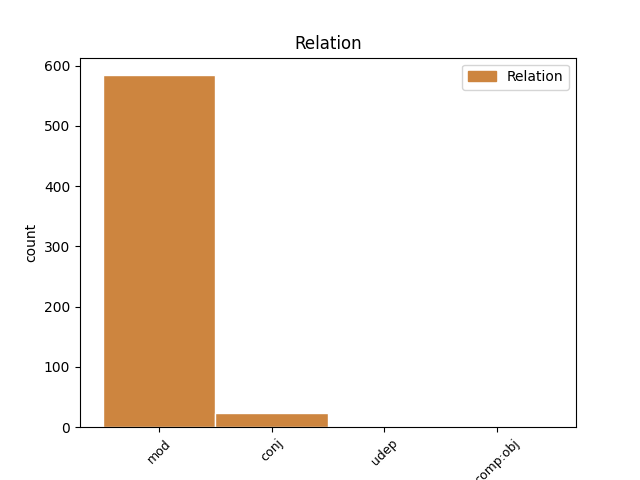
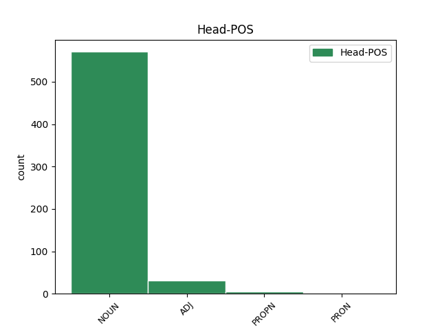
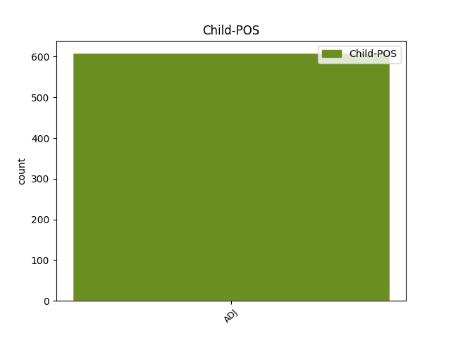

Distribution of features within this leaf



Agreement Rules sorted by frequency.
- When the dependent token is the modifer(mod) of the head token, and the head token is NOUN and the dependent token is ADJ.
1 Ён _ _ _ _ 0 _ _ _
2 прыставаў _ _ _ _ 0 _ _ _
3 да _ _ _ _ 0 _ _ _
4 свайго _ _ _ _ 0 _ _ _
5 даўганогага _ _ _ _ 0 _ _ _
6 дзядзькі _ _ _ _ 0 _ _ _
7 Жырафа _ _ _ _ 0 _ _ _
8 і _ _ _ _ 0 _ _ _
9 пытаўся _ _ _ _ 0 _ _ _
10 , _ _ _ _ 0 _ _ _
11 чаму _ _ _ _ 0 _ _ _
12 ў _ _ _ _ 0 _ _ _
13 яго _ _ _ _ 0 _ _ _
14 на _ _ _ _ 0 _ _ _
15 скуры _ _ _ _ 0 _ _ _
16 плямы _ _ _ _ 0 _ _ _
17 , _ _ _ _ 0 _ _ _
18 і _ _ _ _ 0 _ _ _
19 высачэзны _ _ _ _ 0 _ _ _
20 дзядзька _ _ _ _ 0 _ _ _
21 Жыраф _ _ _ _ 0 _ _ _
22 даваў _ _ _ _ 0 _ _ _
23 яму _ _ _ _ 0 _ _ _
24 за _ _ _ _ 0 _ _ _
25 гэта _ _ _ _ 0 _ _ _
26 грымака _ _ _ _ 0 _ _ _
27 сваім _ _ _ _ 0 _ _ _
28 цвёрдым цвёрды ADJ DT Animacy=Inan|Case=Ins|Degree=Pos|Gender=Masc|Number=Sing 33 mod _ SpaceAfter=No
29 , _ _ _ _ 0 _ _ _
30 як _ _ _ _ 0 _ _ _
31 камень _ _ _ _ 0 _ _ _
32 , _ _ _ _ 0 _ _ _
33 капытом капыт NOUN NN Animacy=Inan|Case=Ins|Gender=Masc|Number=Sing 0 _ _ _
34 . _ _ _ _ 0 _ _ _
1 Некаторымі _ _ _ _ 0 _ _ _
2 з _ _ _ _ 0 _ _ _
3 іх _ _ _ _ 0 _ _ _
4 ён _ _ _ _ 0 _ _ _
5 карыстаўся _ _ _ _ 0 _ _ _
6 як _ _ _ _ 0 _ _ _
7 прыкрыццём _ _ _ _ 0 _ _ _
8 , _ _ _ _ 0 _ _ _
9 прынаджваючы _ _ _ _ 0 _ _ _
10 качак _ _ _ _ 0 _ _ _
11 , _ _ _ _ 0 _ _ _
12 і _ _ _ _ 0 _ _ _
13 зараз _ _ _ _ 0 _ _ _
14 , _ _ _ _ 0 _ _ _
15 калі _ _ _ _ 0 _ _ _
16 човен _ _ _ _ 0 _ _ _
17 выйшаў _ _ _ _ 0 _ _ _
18 на _ _ _ _ 0 _ _ _
19 адкрытую _ _ _ _ 0 _ _ _
20 ваду _ _ _ _ 0 _ _ _
21 , _ _ _ _ 0 _ _ _
22 з _ _ _ _ 0 _ _ _
23 іх _ _ _ _ 0 _ _ _
24 узнялася _ _ _ _ 0 _ _ _
25 хмара _ _ _ _ 0 _ _ _
26 чыркоў _ _ _ _ 0 _ _ _
27 , _ _ _ _ 0 _ _ _
28 крохаляў _ _ _ _ 0 _ _ _
29 , _ _ _ _ 0 _ _ _
30 чырвонагаловых чырвонагаловы ADJ DT Animacy=Anim|Case=Gen|Degree=Pos|Number=Plur 0 _ _ _
31 і _ _ _ _ 0 _ _ _
32 чарнакрылых чарнакрылы ADJ DT Animacy=Anim|Case=Gen|Degree=Pos|Number=Plur 30 conj _ _
33 дзікіх _ _ _ _ 0 _ _ _
34 качак _ _ _ _ 0 _ _ _
35 і _ _ _ _ 0 _ _ _
36 свістух _ _ _ _ 0 _ _ _
37 . _ _ _ _ 0 _ _ _
1 І _ _ _ _ 0 _ _ _
2 толькi _ _ _ _ 0 _ _ _
3 ў _ _ _ _ 0 _ _ _
4 Мiнску _ _ _ _ 0 _ _ _
5 быў _ _ _ _ 0 _ _ _
6 адзначаны _ _ _ _ 0 _ _ _
7 летась _ _ _ _ 0 _ _ _
8 рост _ _ _ _ 0 _ _ _
9 рэальных _ _ _ _ 0 _ _ _
10 заробкаў _ _ _ _ 0 _ _ _
11 работнiкаў _ _ _ _ 0 _ _ _
12 аховы аховы ADJ JJL Animacy=Inan|Case=Gen|Gender=Fem|Number=Sing 0 _ _ _
13 здароўя здароў ADJ NN Animacy=Inan|Case=Gen|Gender=Neut|Number=Sing 12 mod _ _
14 на _ _ _ _ 0 _ _ _
15 1,4 _ _ _ _ 0 _ _ _
16 працэнта _ _ _ _ 0 _ _ _
17 , _ _ _ _ 0 _ _ _
18 што _ _ _ _ 0 _ _ _
19 з'яўляецца _ _ _ _ 0 _ _ _
20 сведчаннем _ _ _ _ 0 _ _ _
21 увагi _ _ _ _ 0 _ _ _
22 да _ _ _ _ 0 _ _ _
23 нашай _ _ _ _ 0 _ _ _
24 галiны _ _ _ _ 0 _ _ _
25 з _ _ _ _ 0 _ _ _
26 боку _ _ _ _ 0 _ _ _
27 сталiчных _ _ _ _ 0 _ _ _
28 уладаў _ _ _ _ 0 _ _ _
29 . _ _ _ _ 0 _ _ _
1 Пэўны _ _ _ _ 0 _ _ _
2 час _ _ _ _ 0 _ _ _
3 таму _ _ _ _ 0 _ _ _
4 ў _ _ _ _ 0 _ _ _
5 галоўным _ _ _ _ 0 _ _ _
6 медыцынскiм _ _ _ _ 0 _ _ _
7 ведамстве _ _ _ _ 0 _ _ _
8 спрабавалi _ _ _ _ 0 _ _ _
9 скласцi _ _ _ _ 0 _ _ _
10 прыблiзны _ _ _ _ 0 _ _ _
11 " _ _ _ _ 0 _ _ _
12 сцэнарый _ _ _ _ 0 _ _ _
13 " _ _ _ _ 0 _ _ _
14 на _ _ _ _ 0 _ _ _
15 блiжэйшыя _ _ _ _ 0 _ _ _
16 5 _ _ _ _ 0 _ _ _
17 - _ _ _ _ 0 _ _ _
18 6 _ _ _ _ 0 _ _ _
19 гадоў _ _ _ _ 0 _ _ _
20 : _ _ _ _ 0 _ _ _
21 з _ _ _ _ 0 _ _ _
22 улiкам _ _ _ _ 0 _ _ _
23 аб'ёмаў _ _ _ _ 0 _ _ _
24 падрыхтоўкi _ _ _ _ 0 _ _ _
25 спецыялiстаў _ _ _ _ 0 _ _ _
26 у _ _ _ _ 0 _ _ _
27 медыцынскiх медыцынскi ADJ NN Animacy=Inan|Case=Loc|Gender=Masc|Number=Plur 28 mod _ _
28 ВНУ ВНУ PROPN _ Animacy=Inan|Case=Loc|Gender=Masc|Number=Plur 0 _ _ _
29 , _ _ _ _ 0 _ _ _
30 дэмаграфiчных _ _ _ _ 0 _ _ _
31 тэндэнцый _ _ _ _ 0 _ _ _
32 і _ _ _ _ 0 _ _ _
33 многiх _ _ _ _ 0 _ _ _
34 iншых _ _ _ _ 0 _ _ _
35 акалiчнасцяў _ _ _ _ 0 _ _ _
36 атрымлiвалася _ _ _ _ 0 _ _ _
37 , _ _ _ _ 0 _ _ _
38 што _ _ _ _ 0 _ _ _
39 патрэбы _ _ _ _ 0 _ _ _
40 айчыннай _ _ _ _ 0 _ _ _
41 сiстэмы _ _ _ _ 0 _ _ _
42 аховы _ _ _ _ 0 _ _ _
43 здароўя _ _ _ _ 0 _ _ _
44 ва _ _ _ _ 0 _ _ _
45 ўрачэбных _ _ _ _ 0 _ _ _
46 кадрах _ _ _ _ 0 _ _ _
47 могуць _ _ _ _ 0 _ _ _
48 быць _ _ _ _ 0 _ _ _
49 задаволеныя _ _ _ _ 0 _ _ _
50 да _ _ _ _ 0 _ _ _
51 2014 _ _ _ _ 0 _ _ _
52 года _ _ _ _ 0 _ _ _
53 . _ _ _ _ 0 _ _ _
1 Самым _ _ _ _ 0 _ _ _
2 цёплым _ _ _ _ 0 _ _ _
3 красавіцкім _ _ _ _ 0 _ _ _
4 днём дзень NOUN NN Animacy=Inan|Case=Ins|Gender=Masc|Number=Sing 0 _ _ _
5 у _ _ _ _ 0 _ _ _
6 Мінску _ _ _ _ 0 _ _ _
7 было _ _ _ _ 0 _ _ _
8 22 _ _ _ _ 0 _ _ _
9 красавіка _ _ _ _ 0 _ _ _
10 1950 _ _ _ _ 0 _ _ _
11 г. _ _ _ _ 0 _ _ _
12 ( _ _ _ _ 0 _ _ _
13 26 _ _ _ _ 0 _ _ _
14 °С _ _ _ _ 0 _ _ _
15 ) _ _ _ _ 0 _ _ _
16 , _ _ _ _ 0 _ _ _
17 а _ _ _ _ 0 _ _ _
18 самым _ _ _ _ 0 _ _ _
19 халодным халодны ADJ JJL Case=Ins|Degree=Pos|Gender=Masc|Number=Sing 4 conj _ _
20 -- _ _ _ _ 0 _ _ _
21 1 _ _ _ _ 0 _ _ _
22 красавіка _ _ _ _ 0 _ _ _
23 1923 _ _ _ _ 0 _ _ _
24 г. _ _ _ _ 0 _ _ _
25 ( _ _ _ _ 0 _ _ _
26 - _ _ _ _ 0 _ _ _
27 18,4 _ _ _ _ 0 _ _ _
28 °С _ _ _ _ 0 _ _ _
29 ) _ _ _ _ 0 _ _ _
30 . _ _ _ _ 0 _ _ _
1 У _ _ _ _ 0 _ _ _
2 далейшым _ _ _ _ 0 _ _ _
3 Нацыянальны _ _ _ _ 0 _ _ _
4 банк _ _ _ _ 0 _ _ _
5 мае _ _ _ _ 0 _ _ _
6 намер _ _ _ _ 0 _ _ _
7 працягваць _ _ _ _ 0 _ _ _
8 праводзіць _ _ _ _ 0 _ _ _
9 грашова-крэдытную грашова-крэдытны ADJ JJL Case=Acc|Degree=Pos|Gender=Fem|Number=Sing 10 comp:obj _ _
10 палітыку палітыка NOUN NN Animacy=Inan|Case=Acc|Gender=Fem|Number=Sing 0 _ _ _
11 , _ _ _ _ 0 _ _ _
12 зыходзячы _ _ _ _ 0 _ _ _
13 з _ _ _ _ 0 _ _ _
14 інфляцыйных _ _ _ _ 0 _ _ _
15 тэндэнцый _ _ _ _ 0 _ _ _
16 , _ _ _ _ 0 _ _ _
17 сітуацыі _ _ _ _ 0 _ _ _
18 на _ _ _ _ 0 _ _ _
19 грашовым _ _ _ _ 0 _ _ _
20 рынку _ _ _ _ 0 _ _ _
21 , _ _ _ _ 0 _ _ _
22 у _ _ _ _ 0 _ _ _
23 рэальным _ _ _ _ 0 _ _ _
24 сектары _ _ _ _ 0 _ _ _
25 эканомікі _ _ _ _ 0 _ _ _
26 . _ _ _ _ 0 _ _ _
1 А _ _ _ _ 0 _ _ _
2 Сняжана _ _ _ _ 0 _ _ _
3 Міхейцава _ _ _ _ 0 _ _ _
4 з _ _ _ _ 0 _ _ _
5 Віцебскага _ _ _ _ 0 _ _ _
6 дзяржаўнага _ _ _ _ 0 _ _ _
7 тэхналагічнага _ _ _ _ 0 _ _ _
8 ўніверсітэта _ _ _ _ 0 _ _ _
9 марыць _ _ _ _ 0 _ _ _
10 аб _ _ _ _ 0 _ _ _
11 тым _ _ _ _ 0 _ _ _
12 , _ _ _ _ 0 _ _ _
13 каб _ _ _ _ 0 _ _ _
14 беларускія _ _ _ _ 0 _ _ _
15 вучоныя _ _ _ _ 0 _ _ _
16 вынайшлі _ _ _ _ 0 _ _ _
17 дамскую _ _ _ _ 0 _ _ _
18 сумачку _ _ _ _ 0 _ _ _
19 , _ _ _ _ 0 _ _ _
20 у _ _ _ _ 0 _ _ _
21 якой _ _ _ _ 0 _ _ _
22 усё _ _ _ _ 0 _ _ _
23 будзе _ _ _ _ 0 _ _ _
24 лёгка _ _ _ _ 0 _ _ _
25 знайсці _ _ _ _ 0 _ _ _
26 пры _ _ _ _ 0 _ _ _
27 дапамозе _ _ _ _ 0 _ _ _
28 галасавых _ _ _ _ 0 _ _ _
29 каманд _ _ _ _ 0 _ _ _
30 , _ _ _ _ 0 _ _ _
31 і _ _ _ _ 0 _ _ _
32 мужчынскія _ _ _ _ 0 _ _ _
33 шкарпэткі _ _ _ _ 0 _ _ _
34 , _ _ _ _ 0 _ _ _
35 якія які PRON _ Case=Nom|Number=Plur 0 _ _ _
36 самі сам ADJ _ Case=Nom|Degree=Pos|Number=Plur 35 mod _ _
37 знаходзяць _ _ _ _ 0 _ _ _
38 сваю _ _ _ _ 0 _ _ _
39 пару _ _ _ _ 0 _ _ _
40 . _ _ _ _ 0 _ _ _
1 Чаму _ _ _ _ 0 _ _ _
2 аб'ёмы _ _ _ _ 0 _ _ _
3 падрыхтоўкi _ _ _ _ 0 _ _ _
4 спецыялiстаў _ _ _ _ 0 _ _ _
5 з _ _ _ _ 0 _ _ _
6 медыцынскай _ _ _ _ 0 _ _ _
7 адукацыяй _ _ _ _ 0 _ _ _
8 у _ _ _ _ 0 _ _ _
9 Беларусi _ _ _ _ 0 _ _ _
10 пастаянна _ _ _ _ 0 _ _ _
11 растуць _ _ _ _ 0 _ _ _
12 , _ _ _ _ 0 _ _ _
13 а _ _ _ _ 0 _ _ _
14 залатаць _ _ _ _ 0 _ _ _
15 " _ _ _ _ 0 _ _ _
16 прарэхi _ _ _ _ 0 _ _ _
17 " _ _ _ _ 0 _ _ _
18 ў _ _ _ _ 0 _ _ _
19 кадравым кадравы ADJ JJL Case=Loc|Degree=Pos|Gender=Neut|Number=Sing 20 udep _ _
20 забеспячэннi забеспячэннi NOUN RB Animacy=Inan|Case=Loc|Gender=Neut|Number=Sing 0 _ _ _
21 галiны _ _ _ _ 0 _ _ _
22 нiяк _ _ _ _ 0 _ _ _
23 не _ _ _ _ 0 _ _ _
24 ўдаецца _ _ _ _ 0 _ _ _
25 ? _ _ _ _ 0 _ _ _
Disagree Examples:
1 Чэшская _ _ _ _ 0 _ _ _
2 мова _ _ _ _ 0 _ _ _
3 ды _ _ _ _ 0 _ _ _
4 чэшскі чэшскі ADJ JJL Case=Nom|Degree=Pos|Gender=Masc|Number=Sing 5 mod _ _
5 дух дух NOUN NN Animacy=Inan|Case=Acc|Gender=Masc|Number=Sing 0 _ _ _
6 ніколі _ _ _ _ 0 _ _ _
7 не _ _ _ _ 0 _ _ _
8 спынялі _ _ _ _ 0 _ _ _
9 сваё _ _ _ _ 0 _ _ _
10 існаванне _ _ _ _ 0 _ _ _
11 . _ _ _ _ 0 _ _ _
1 Адпаведныя _ _ _ _ 0 _ _ _
2 прапановы _ _ _ _ 0 _ _ _
3 ў _ _ _ _ 0 _ _ _
4 першым _ _ _ _ 0 _ _ _
5 паўгоддзі паўгоддзе NOUN NN Animacy=Inan|Case=Loc|Gender=Neut|Number=Sing 0 _ _ _
6 2012 2012 ADJ ORD Case=Gen|Degree=Pos|Gender=Masc|Number=Sing 5 mod _ _
7 падрыхтуюць _ _ _ _ 0 _ _ _
8 мінэканомікі _ _ _ _ 0 _ _ _
9 , _ _ _ _ 0 _ _ _
10 мінфін _ _ _ _ 0 _ _ _
11 і _ _ _ _ 0 _ _ _
12 Нацыянальны _ _ _ _ 0 _ _ _
13 банк _ _ _ _ 0 _ _ _
14 . _ _ _ _ 0 _ _ _
1 Пра _ _ _ _ 0 _ _ _
2 гэта _ _ _ _ 0 _ _ _
3 гаворыцца _ _ _ _ 0 _ _ _
4 ў _ _ _ _ 0 _ _ _
5 сумеснай _ _ _ _ 0 _ _ _
6 пастанове пастанова NOUN NN Animacy=Inan|Case=Loc|Gender=Fem|Number=Sing 0 _ _ _
7 Савета _ _ _ _ 0 _ _ _
8 міністраў _ _ _ _ 0 _ _ _
9 і _ _ _ _ 0 _ _ _
10 Нацыянальнага _ _ _ _ 0 _ _ _
11 банка _ _ _ _ 0 _ _ _
12 Беларусі _ _ _ _ 0 _ _ _
13 № _ _ _ _ 0 _ _ _
14 223 _ _ _ _ 0 _ _ _
15 / _ _ _ _ 0 _ _ _
16 7 _ _ _ _ 0 _ _ _
17 ад _ _ _ _ 0 _ _ _
18 12 12 ADJ ORD Case=Gen|Degree=Pos|Gender=Neut|Number=Sing 6 mod _ _
19 сакавіка _ _ _ _ 0 _ _ _
20 . _ _ _ _ 0 _ _ _
1 Як _ _ _ _ 0 _ _ _
2 адзначыла _ _ _ _ 0 _ _ _
3 Святлана _ _ _ _ 0 _ _ _
4 Рыбакова _ _ _ _ 0 _ _ _
5 , _ _ _ _ 0 _ _ _
6 у _ _ _ _ 0 _ _ _
7 апошнія апошні ADJ JJL Animacy=Inan|Case=Acc|Degree=Pos|Number=Plur 9 mod _ _
8 сем _ _ _ _ 0 _ _ _
9 гадоў год NOUN NN Animacy=Inan|Case=Gen|Gender=Masc|Number=Plur 0 _ _ _
10 красавіка _ _ _ _ 0 _ _ _
11 ў _ _ _ _ 0 _ _ _
12 Беларусі _ _ _ _ 0 _ _ _
13 было _ _ _ _ 0 _ _ _
14 на _ _ _ _ 0 _ _ _
15 адзін _ _ _ _ 0 _ _ _
16 - _ _ _ _ 0 _ _ _
17 тры _ _ _ _ 0 _ _ _
18 градусы _ _ _ _ 0 _ _ _
19 цяплей _ _ _ _ 0 _ _ _
20 чым _ _ _ _ 0 _ _ _
21 звычайна _ _ _ _ 0 _ _ _
22 . _ _ _ _ 0 _ _ _
1 Пераможца _ _ _ _ 0 _ _ _
2 леташняга _ _ _ _ 0 _ _ _
3 конкурсу _ _ _ _ 0 _ _ _
4 Азербайджан _ _ _ _ 0 _ _ _
5 і _ _ _ _ 0 _ _ _
6 краіны _ _ _ _ 0 _ _ _
7 " _ _ _ _ 0 _ _ _
8 Вялікай _ _ _ _ 0 _ _ _
9 пяцёркі _ _ _ _ 0 _ _ _
10 " _ _ _ _ 0 _ _ _
11 -- _ _ _ _ 0 _ _ _
12 Францыя _ _ _ _ 0 _ _ _
13 , _ _ _ _ 0 _ _ _
14 Вялікабрытанія _ _ _ _ 0 _ _ _
15 , _ _ _ _ 0 _ _ _
16 Германія _ _ _ _ 0 _ _ _
17 , _ _ _ _ 0 _ _ _
18 Італія _ _ _ _ 0 _ _ _
19 і _ _ _ _ 0 _ _ _
20 Іспанія _ _ _ _ 0 _ _ _
21 -- _ _ _ _ 0 _ _ _
22 возьмуць _ _ _ _ 0 _ _ _
23 удзел _ _ _ _ 0 _ _ _
24 непасрэдна _ _ _ _ 0 _ _ _
25 ў _ _ _ _ 0 _ _ _
26 фінале фінал NOUN NN Animacy=Inan|Case=Loc|Gender=Masc|Number=Sing 0 _ _ _
27 конкурсу _ _ _ _ 0 _ _ _
28 26 26 ADJ ORD Case=Gen|Degree=Pos|Gender=Neut|Number=Sing 26 mod _ _
29 траўня _ _ _ _ 0 _ _ _
30 . _ _ _ _ 0 _ _ _